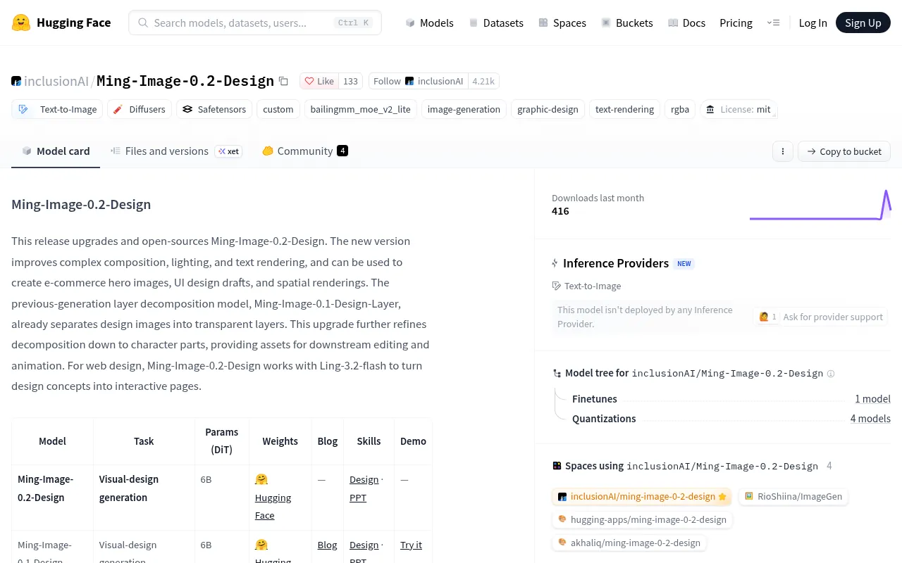
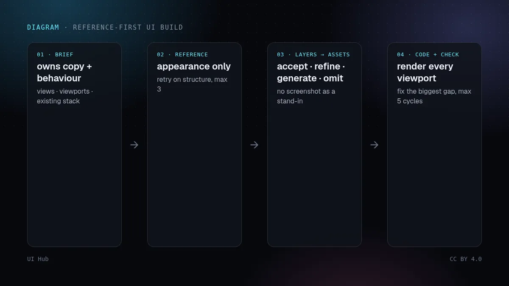

11 月 25 日，蚂蚁集团的开源模型团队 inclusionAI 把 Ming-Image-0.2-Design 的权重放上 Hugging Face，次日正式发布。它是一个 60 亿参数的扩散 Transformer，采用 MIT 许可，专门面向设计师最常被要的那几类图：电商主图、海报、空间效果图和 UI 设计草图。模型卡称，它在复杂构图、光照和图中文字上比 9 月的 0.1 版更好；inclusionAI 还表示，截至 11 月 25 日，它在 Artificial Analysis 文生图榜单（AA-Image-T2I v2.1，1095 Elo）上位列开源权重模型第一，在团队自己的图表里排在 FLUX.2 [max] 和 Qwen-Image-2.0 之前。这个排名是厂商自己的说法，榜单每周都在变，理解成“值得一试”就好，别当成“最好”。

对 UI 工作来说，有意思的不是榜单，而是这次发布附带了一套工作方式：一种结构化提示格式、一个能把扁平设计稿拆成图层的模型，以及一个 MIT 许可的智能体技能 Ling UI Design，它能把生成的或你提供的界面图变成真正的前端代码。放在一起看，它们清楚地回答了每个用图像模型做界面的团队都会遇到的问题：这张图到底是拿来干什么的？
模型。默认输出 2048 × 2048，12 步采样，CFG 1.0，另有 16:9、4:3、2:3 的 2K 尺寸档。inclusionAI 验证过的配置是一张 80 GB 显存的 CUDA GPU、BF16 精度、用 vLLM-Omni 部署，所以多数团队会通过托管 API 而不是笔记本来用它。提示格式。普通句子也能用，但团队推荐类似 Figma 的 JSON 描述：canvas_settings（比例、光照、风格）加上从底到顶排列的 layers 列表，每层写描述、坐标、与其他层的关系和十六进制颜色；要渲染的文字逐字加引号，而且只写一次。分层模型。Ming-Image-0.1-Design-Layer 能把扁平的设计稿拆成多张透明 PNG 图层，inclusionAI 说更精细的版本下周推出。技能。Ling UI Design 把图像模型和分层模型接进编程智能体，默认拆成文字、图片、容器、背景 4 层。

生成的界面图看起来像做完了，问题恰恰在这里。它的文案是模型编的；文字是像素，读屏软件读不出来，翻译也改不了；间距只是大概，不在你的间距阶梯上；它只画出组件的一种状态，而真实组件还有悬停、焦点、加载、空状态和错误状态。如果逐像素照描，还会把模型的默认审美一起锁进来：居中的主视觉、三张柔和的卡片、一个紫色按钮。Ling UI Design 技能用一个明确的证据优先级来防止这一点：需求说明、你提供的截图和素材排第一；选中的生成图排第二，只用来参考外观，绝不作为文案来源；当前构建的截图排第三；拆出来的图层排最后，因为它们可能互相重叠、丢内容，甚至编造被遮住的像素。两个来源冲突时，以排名高的为准。
图像模型正在变成前端工作里的常规一步，一个团队可以自己部署的 MIT 模型让这一步更容易自动化。真正有用的变化在于：智能体被允许从图里拿走什么。拿走颜色、气质、密度、层级和真正的位图素材，是摆脱空白页的快捷方式；拿走文案、给读屏软件的结构、组件行为或精确布局，则是做出满是 AI 味、无障碍不合格的页面的捷径。把这条边界写下来，写进技能或 AGENTS.md，再给智能体设定硬性的停止规则，因为“一直重新生成直到看着对”是整个流程里最费钱的循环。
artifacts/ 里，没有进入上线的包？# 贴给编程智能体，并附上需求说明和一张参考图
按需求说明搭这个页面，图片只当视觉参考。
1. 从需求说明里写下：每个标题、标签和段落，需要的视图，
目标视口（375、768、1440），以及我们已有的组件。
2. 从图片里只拿：颜色、字号阶梯、间距节奏、密度、
区块顺序和栏宽比例。记到 notes/reference.md。
3. 列出每块位图区域（照片、插画），逐个记录
采用 / 裁切 / 生成 / 省略，以及它要填的位置尺寸。
绝不用整张截图、渐变或 emoji 代替。
4. 用我们的组件和 token 在代码里实现文字、控件和布局。
不抄图里的文案，不把文字放进图片。
5. 每个视口分别在亮色和暗色下渲染，和参考图对比，
修掉最大的差异，最多重复 5 次。报告仍然不一致的地方。UI Hub 相关阅读：图层、品牌包和 JSON 提示让 AI 视觉不再千篇一律、改 UI 时用视觉提示、让并行的设计方向可以比较，以及把设计智能体的规则写进代码。